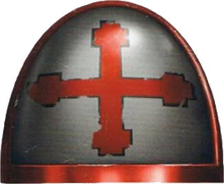

Fire Angels
| Fire Angels | |
|---|---|
 Heraldry of the Fire Angels Artwork © Games Workshop | |
| Founding | Twenty-fifth ("Bastion") Founding (late M40) |
| Progenitor | Ultramarines (Roboute Guilliman) |
| Homeworld | Lorin Alpha, Segmentum Solar |
| Fortress-monastery | Unrecorded |
| Chapter Master | Consul-Master Uriaens |
| Allegiance | Imperium of Mankind; Loyalist in the Badab War |
| Colours | Silver and red |
| Notable battles | |
| Fenright Tithe Wars, Magdellan Prime Civil War (143–151.M41), Grand Al'gul (666.M41), Badab War (901–910.M41) | |
The Fire Angels are a loyal Space Marine Chapter of the Adeptus Astartes, raised in the Twenty-fifth Founding of the late 40th millennium from Ultramarines gene-seed. They hold the hive world of Lorin Alpha in the western Segmentum Solar and are best remembered for their part in the Badab War. They have no special links with the wider family of Ultramarines successors.[1]
They are unusually active and open in their faith in the Imperial Cult, which has won them backing in the Ecclesiarchy and allies among the cardinals. Their detractors in other Chapters see this as unseemly and a threat to the Space Marines' independence.[1]
History
[edit]Founding
[edit]The Fire Angels were raised by order of the High Lords of Terra in the Twenty-fifth Founding and given fief over Lorin Alpha. Their gene-seed is Ultramarines, but they name no ancestral Chapter. Their first officers and trainers were chosen from several Ultramarines successors. Initiates are drawn from the planetary defence force's military caste and from the kill-gangs of the sub-hives, and are chosen three times a year in the Test of Fire, a trial of combat, fear and endurance run by the Master of Recruits under the eyes of the Chaplains.[1]
Wars of the Chapter
[edit]The first great campaign was the Fenright Tithe Wars, a crusade against the civil wars of the Cal-Sek, Nepthis and Sadusyne Sectors, in which the Fire Angels fought on the heretic world of Jhoppa against rebel "juggernaut" companies, matching Predators and Razorbacks against rebel Leman Russ and Malcador tanks.[a] In 143–151.M41, in the Magdellan Prime Civil War, they relieved the Adepta Sororitas Order of the Ebon Chalice, whose preceptory had held for years against the Cult of Balthalamus. In 666.M41 the Inquisition called them to fight the warband The Sanctified on the cemetery worlds of Grand Al'gul; the Chief Librarian Mathias Dee burned himself to avoid possession.[1]
The Badab War
[edit]Answering the Inquisition, the Fire Angels came to the Badab Sector with seven companies. Their largest and costliest battle was for Sagan, after which they could no longer serve as a front line force. With a contingent of the Sons of Medusa they were sent to suppress the Endymion Cluster. The exterminations there by the Carcharodons led them to lodge a formal grievance with the Loyalist command. In 910.M41, reduced and unwilling to back down, they withdrew from the war rather than risk fighting a fellow Chapter.[1]
Organisation and doctrine
[edit]The Fire Angels follow the Codex Astartes and treat it as a military treatise, as does the aristocratic military tradition of their world. They are young and own few relics, so they rely on easily made Codex patterns such as the Rhino and Predator, and field most of their First Company as Sternguard. The few Terminator suits, Land Raiders and Dreadnoughts given by Ultramarines successors at their founding are used only in the direst emergencies. The factories of Lorin Alpha turn out the vehicles, and the Chapter prefers mobile mechanised war to Drop Pod assault.[1]
Their faith has taken them to Ecclesiarchy crusades and wars of faith, beside the Sisters, and the Synod and the Ordo Hereticus often seek their help. Their relic flamer, the Light of Castigation, was given after the Hengistus Crusade by a grateful cardinal.[1]
Notable members
[edit]- Consul-Master Uriaens: present Chapter Master.
- Consul-Master Haran Stark: died in the mid-41st millennium fighting a Lord of Change to defend the Narthex of Penitents.
- Praetor Tarnus Vale: captain of the Third Company, a master of mechanised war.
- Malghrav: Assault Marine who led a Deathwatch strike force in the Hadex Anomaly.
Timeline
[edit]| Date | Event |
|---|---|
| late M40 | Twenty-fifth Founding; Fire Angels raised and given Lorin Alpha |
| M40–M41[b] | Fenright Tithe Wars; Jhoppa |
| 143–151.M41 | Magdellan Prime Civil War |
| 666.M41 | Battle for Grand Al'gul against The Sanctified |
| mid-M41 | Death of Consul-Master Haran Stark |
| 901.M41 | Fire Angels arrive in the Badab Sector |
| 901–910.M41 | Battle of Sagan; heavy losses |
| 910.M41 | Withdrawal from the Badab War |
| 999.M41 | Great Rift opens |